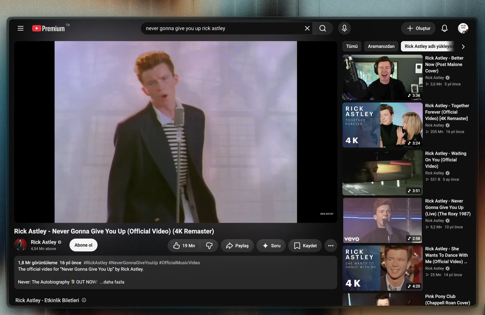

A screenshot tool you can read before you run it.
Freeze the screen, drag a box, draw on it. Nothing reaches your clipboard or your disk until you say so, and ⌘R hands back the text inside your selection with its indentation intact.
macOS 13 or later
Those three commands are the entire pitch. Run them before you run anything else.
The gesture, on this page
macOS captures first and lets you annotate afterwards, in a window that opens somewhere else once you catch the thumbnail before it expires. Shotty puts the drawing step where the selection already is. Try it below, on a real screenshot.

In the app the same toolbar carries Copy, Save and OCR, and the keys are P R A H for the tools, ⌘C to copy the lit region, ⌘R to read its text. Drag outside your selection to start a new one.
Every line, accounted for
This is the whole program. Not the interesting parts of it, not a summary. All of it, grouped by what each region does. Open any row to read it right here, and check the line range against the file yourself. If it ever reaches four digits, the argument on this page stops being true and you should hold me to that.
OCR that keeps the columns
Vision returns recognised text as a bag of bounding boxes, so the obvious implementation pastes back a flattened blob. Shotty estimates character width from the median box and maps every fragment to a column, so indentation and column gaps survive. That reconstruction is 45 lines, in Overlay.layout(_:); the whole OCR path is 80.
The column mapping above is that function ported to JS, running here on fragments that carry the noise Vision actually returns. It leaves out the paragraph-break pass, which this sample has nothing to exercise. Step through it yourself.
Small selections are upscaled 2× before recognition, and language correction is off by default so it stops "fixing" your identifiers. One flag at the top of the file turns it back on if you mostly capture prose.
Install
There is no signed installer yet. You build it, which takes a few seconds and means you can read what you are running first.
- Get the command line tools if you don't have them.
xcode-select --install - Clone and build.
build.shis 22 lines: an Info.plist,swiftc, and an ad-hoccodesignso the Screen Recording grant survives rebuilds.git clone https://github.com/uuu4/shotty.git cd shotty && ./build.sh && open Shotty.app - Grant Screen Recording on the first capture: System Settings → Privacy & Security → Screen Recording. Then open it once more. Shotty lives in the menu bar as ✂︎, with no Dock icon. macOS 13 or later.
Keys
| ⌘⇧2 | capture |
| drag | select a region; drag outside it to reselect |
| P R A H | pen · rectangle · arrow · highlighter |
| ⌘Z | undo the last stroke |
| ⌘C Return | copy the selection to the clipboard |
| ⌘S | save it to the Desktop |
| ⌘R | OCR the selection to the clipboard |
| Esc | cancel |